WORDMARK × the SIL Open Font License
Build with me
WORDMARK began with open-source typefaces. The best fonts I have worked on are the ones anyone can take apart.
Same bricks,
different thing
A box of bricks comes with instructions for one car. A lot of people stop there. The second thing you build is the better one, because it is yours.
Most fonts ship glued. You may look at the car, and you may rent it by the seat. An open-source font ships as bricks: the sources, the build, and a license that says go ahead. That is the kind I draw.
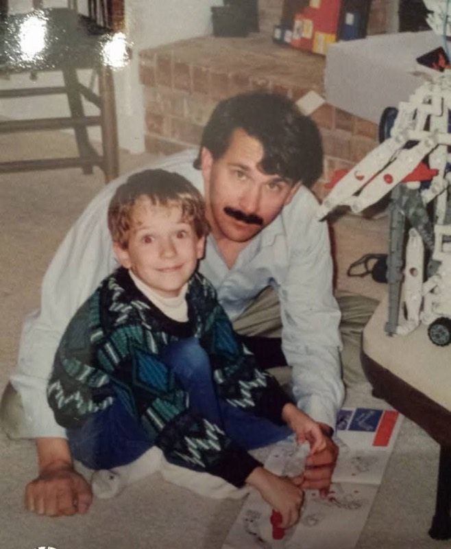
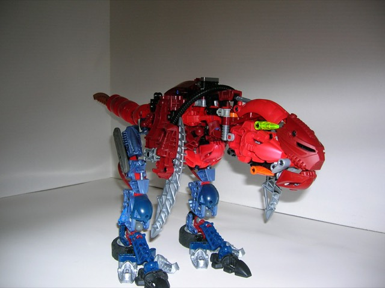
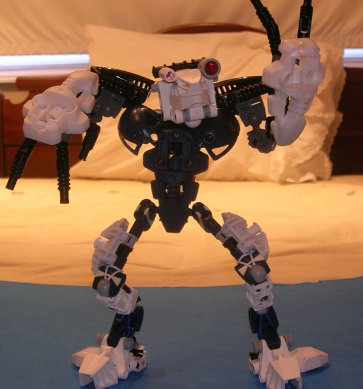
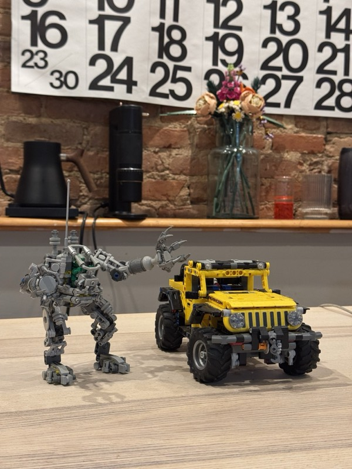
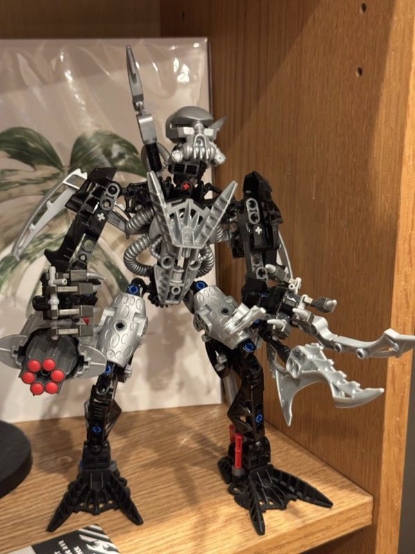
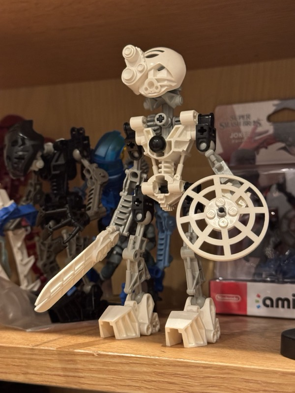
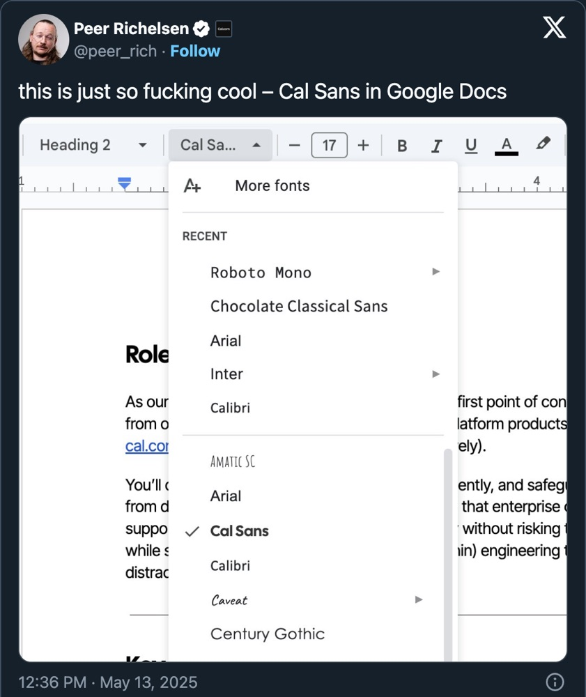
The font goes wherever the brand goes
A proprietary license counts things: desktops, pageviews, apps, the agency, the contractor, the customer who embeds your widget. Every new place the brand wants to be starts with an email to legal.
An open font has nothing to count. It goes in the repo, the package, the app binary, the pitch deck, even Google Docs. Cal Sans installs with npm i cal-sans, and that one line is the whole procurement process.
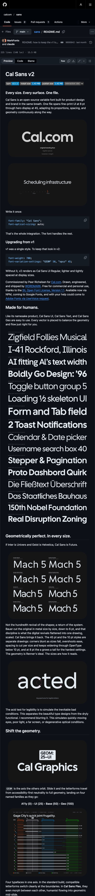
The work shows
The sources are public, so the claims are checkable. Cal Sans has 1,546 glyphs, 402,680 kern pairs, and covers 414 languages. You do not have to take my word for any of it: open the repository and count.
Drawing in public is a higher bar, and I like the bar. Every outline is a thing another designer can open.
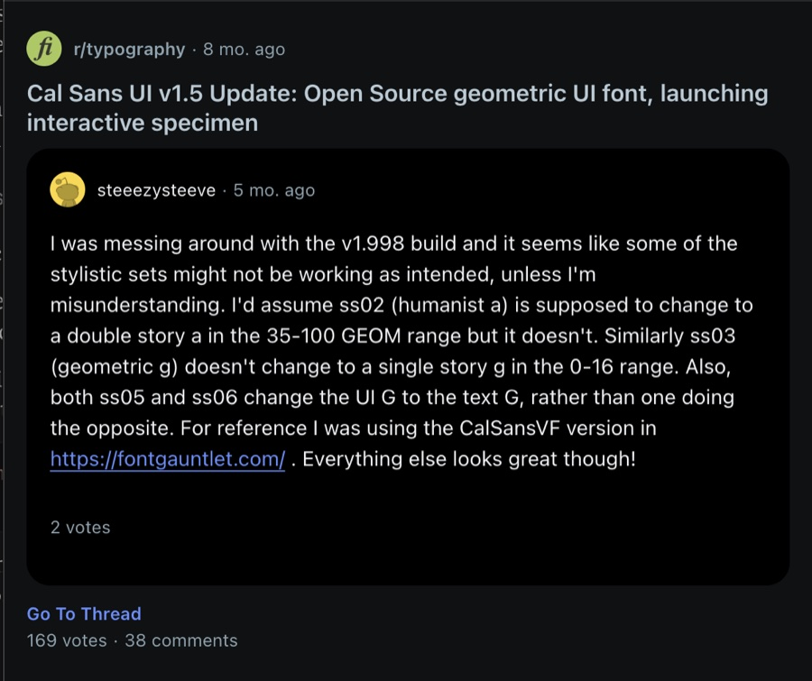
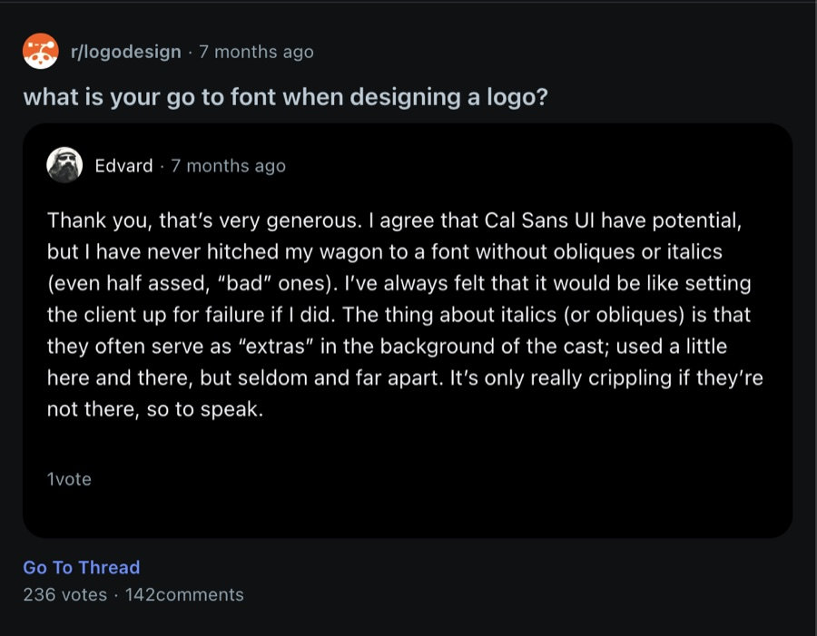
Open fonts get finished
A retail font is finished the day it goes on sale. An open one keeps going. Cal Sans began in 2021 as a single display weight for Cal.com. Today it is one variable font with six axes, roman and italic, from small text to headlines.
That did not come from a roadmap. It came from people using the font where it was never meant to go, and saying so. The users are the best proofers a typeface can have.

Tools can stand on it
When the font is open, the tooling can be too. ReCal Sans lets anyone tune Cal Sans in the browser and download a font with their decisions baked in. No upload, no account, and no permission to ask for, because the license already gave it.
It runs the other way as well. GliffDiff started as Mirko Velimirović’s tool; I forked it and built on it. Somebody else’s bricks, a new thing on top.
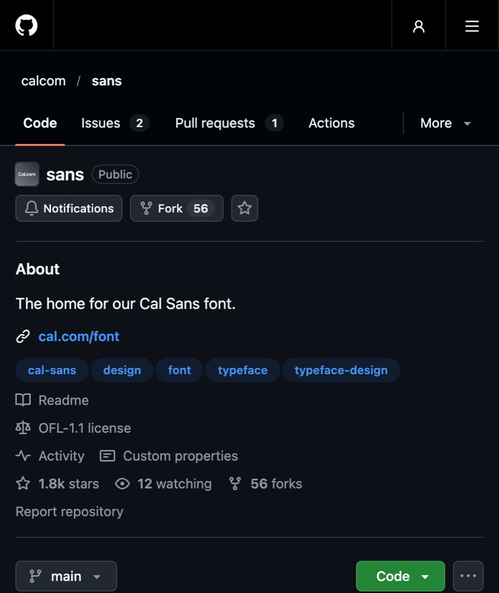
Paid for once, free for everyone after
Open does not mean unpaid. A company commissions a typeface because it needs one; that commission pays for the drawing. The license then hands the result to everybody else.
The client gets a typeface the whole world helps carry. It turns up in other people’s products, tutorials, and templates, with the client’s name on it. No ad buy does that.
The license, in four bricks
Use it
Print, web, apps, logos, commercial work. No seats and no pageviews to count.
Take it apart
The sources are yours to study and change. New weights, new glyphs, a whole new cut.
Pass it on
Bundle it, embed it, redistribute it, with or without your changes.
Keep it open
Changed versions stay under the same license, and the font is never sold on its own.
A plain-language summary of the SIL Open Font License 1.1, not a replacement for it. Where a font reserves its name, a modified version takes a new one.
Bring the brand. I’ll bring the bricks.
If your company should have a typeface of its own, and you would rather give it away than lock it up, that is the work I do best.